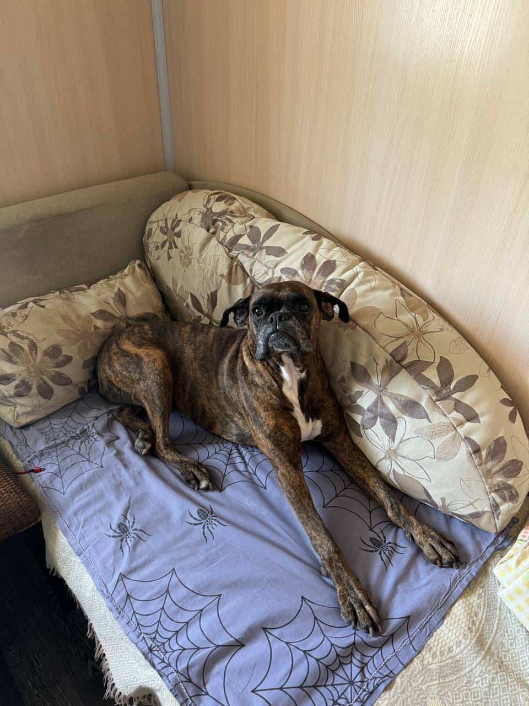
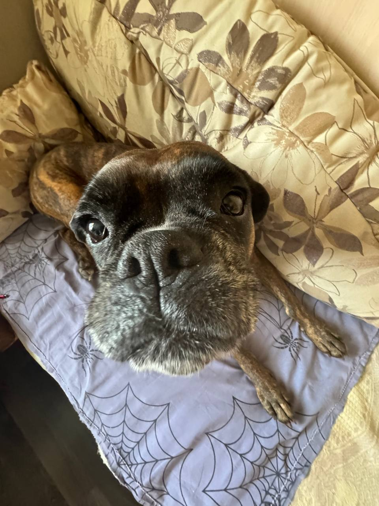
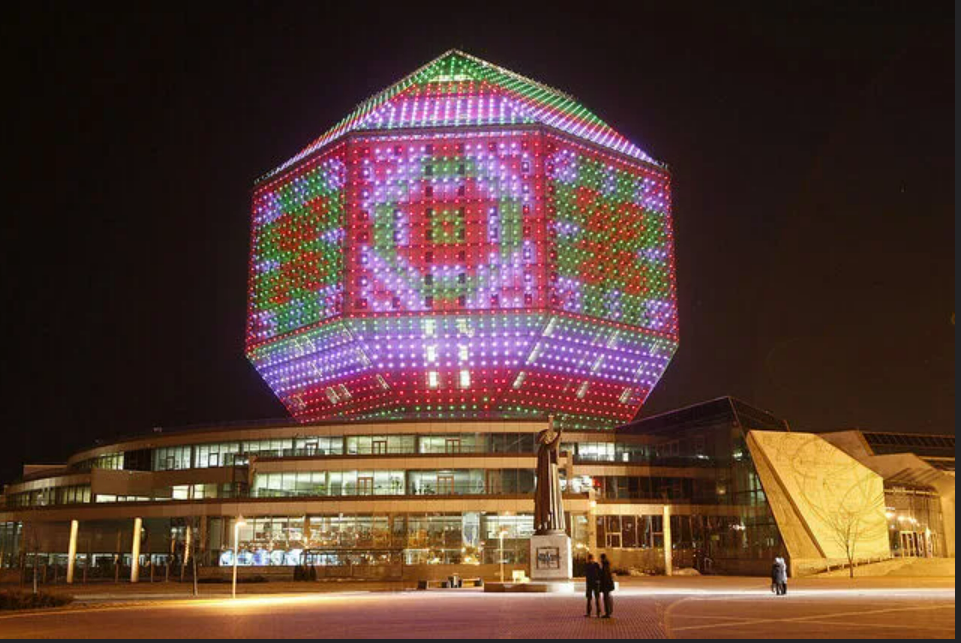
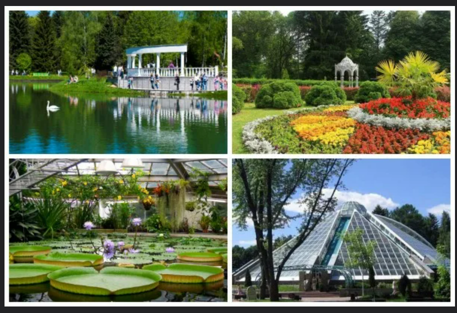
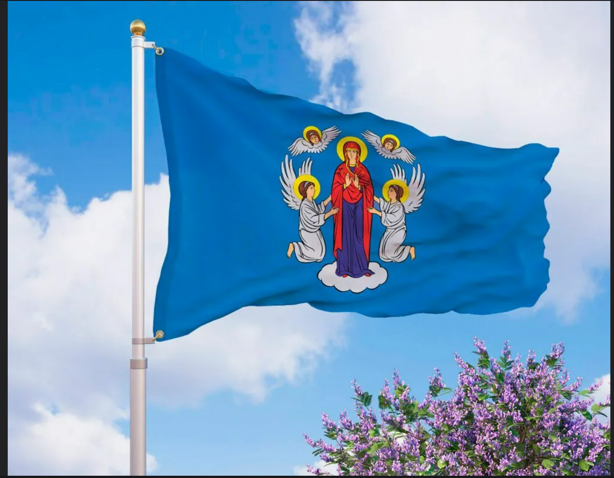
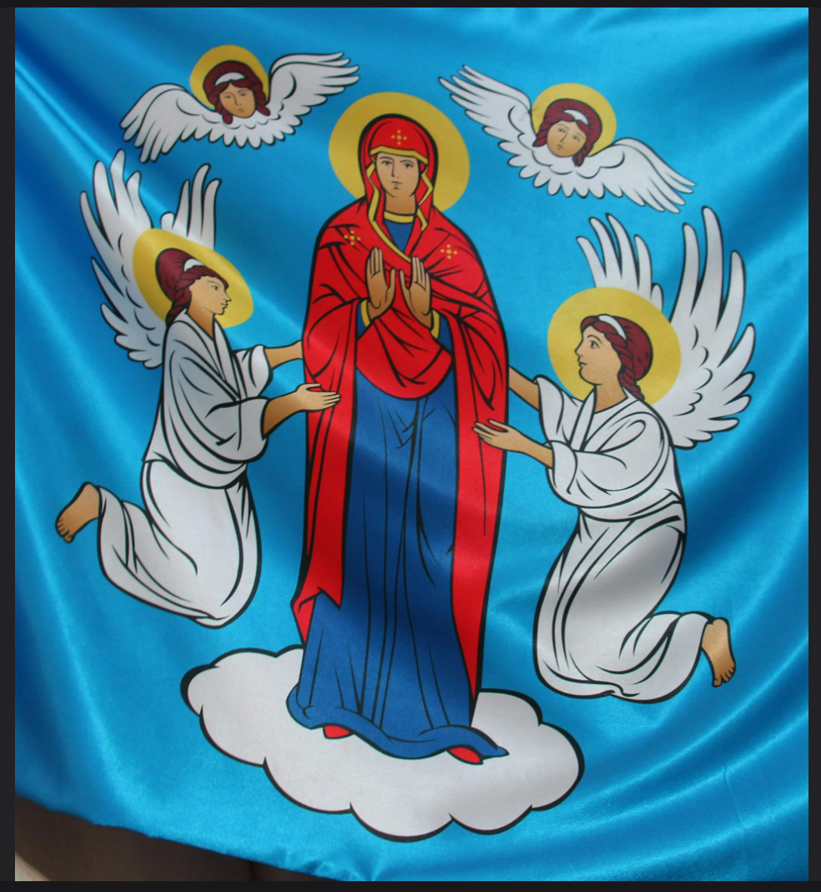
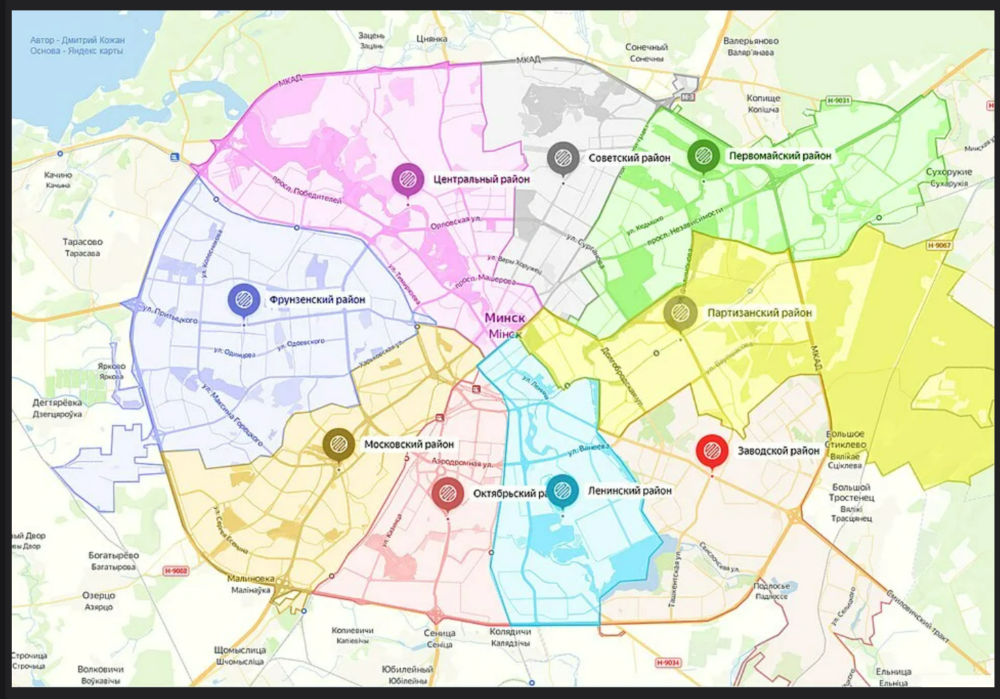

ОБЯЗАННОСТИ ПО ДОМУ КАЖДОГО КОТА
Кот должен:
- Кот должен отсыпаться за человека, всех его родственников, друзей и соседей вместе взятых.
- Кот должен защищать человека от комнатных растений.
- Кот постоянно должен поддерживать человека в форме, заставляя его непрестанно двигаться по квартире, нагибаться, собирая ручки, карандаши, носки и т. д.
- Кот должен крепко держать зубами ручку или карандаш, пока человек пытается писать.
- Кот постоянно должен проводить ревизию в холодильнике, даже если человек этого не хочет. Если он не хочет, значит, что-то там прячет, и с этим что-то следует хорошенько разобраться, а потом уж призвать к ответу самого человека.
- Кот должен ночью каждый час проверять, не заползла ли под одеяло человеку какая-нибудь змея.
- Кот время от времени должен тренировать себя на случай непредвиденного циркового выступления. Для этого он должен периодически устраивать полеты под куполом дома, прыжки с гардины на люстру и обратно и другие всевозможные запрыгивания.
- Кот должен помогать человеку стелить постель, внимательно наблюдая, чтобы под простыней не оказалось никаких предметов.
- Кот должен помнить, что сон для человека – это пустая трата времени, поэтому, завидев спящего человека, необходимо тут же его разбудить, прыгнув ему на живот, а еще лучше на голову.
- Кот должен каждое утро напоминать человеку старую пословицу: «Кто рано
встает, тому Бог дает».
И чем раньше встанет человек, тем больше ему (а заодно и коту) даст Бог. - Кот должен делиться с человеком всем, что у него есть. Постоянно отдавать часть меха на утепление одежды и пола и выкидывать половину еды из чашки.
- Кот должен петь песни, чтобы доставлять человеку радость. Даже если песни грустные.
- Кот должен проверять, по какой причине кто-то не закрыл шкаф или тумбочку и не задвинул ящик.
- Кот должен отгонять от человека плохие сны. Если кот заметит, что человек ворочается в постели, он непременно должен прыгнуть человеку на голову и начать отгонять дурные сны и кошмары.
- Кот должен знать, что лежит во всех коробках и пакетах. И на личном опыте убедиться, насколько там удобно и хорошо находиться.
- Кот должен во время сна человека заглушать наружный шум, громко урча под ухом.
НЕМЕЦКИЙ БОКСЕР


МИНСК
История города
По данным археологии, первые поселения на месте современного Минска появились ещё в начале X века.
Первое летописное упоминание о городе (тогда — Менск или Менеск) относится к 1067 году в «Повести временных лет» и связано с битвой на реке Немиге.
Существует легенда, что город основал богатырь-знахарь Менеск, построивший у реки Свислочь каменную мельницу.
Однако историки считают более вероятным основателем полоцкого князя Всеслава Брячиславича, приказавшего возвести здесь крепость.
ДОСТОПРИМЕЧАТЕЛЬНОСТИ
Минск известен большим количеством архитектурных и исторических достопримечательностей.
В городе можно увидеть старинные замки, храмы, площади, улицы и здания, сохранившие особенности разных эпох.
Национальная Библиотека

Ботанический сад в городе Минске

СИМВОЛЫ ГОРОДА
Как и другие города Беларуси, Минск имеет официальные символы. К ним относятся герб и флаг города.
Флаг Минска

Герб Минска

МИНСК НА КАРТЕ
Минск — столица и крупнейший город Беларуси, расположен в её центральной части.
Город находится недалеко от географического центра страны.
Минск размещён на юго-восточных склонах Минской возвышенности,
которая имеет моренное происхождение и образовалась во время Сожского оледенения — последнего, достигшего этой территории.

МИНСК СЕГОДНЯ
Это сейчас Минск — столица Республики Беларусь, ее политический, экономический и культурный центр, двухмиллионный мегаполис с монументальными сталинскими ансамблями в центре и бесконечными спальными районами на окраинах.
А всего сто лет назад он был пусть и губернским, но провинциальным городом, где наследие ушедшей в конце XVIII века Речи Посполитой соседствовало с типичной эклектикой Российской империи.
В очередном выпуске цикла «Было — стало» мы решили сравнить современный Минск с Минском вековой давности, современную белорусскую столицу с городом, которого уже нет, измененным XX столетием до неузнаваемости.
С 1566 года Минск был столицей своего воеводства, по существу, областным центром.
К концу XVI века в нем проживало около 5 тыс. человек. Не бог весть что, но деревней его назвать было сложно.
За следующее бурное и воинственное столетие население города сократилось почти вдвое, но к моменту раздела страны и инкорпорации Минска в состав Российской империи оно опять достигло 5—6 тыс. жителей.
Это был небольшой, но довольно типичный городок Речи Посполитой, чей силуэт был украшен многочисленными барочными башнями костелов. Примерно таким же увидел его и французский художник Ловернь, посетивший Минск в 1840 году.
НОВОСТИ МИНСКА
В Минске регулярно происходят события, связанные с городской жизнью, транспортом, культурой, спортом и развитием инфраструктуры. Новости помогают жителям узнавать об изменениях в столице и планировать повседневные дела.
Транспорт и городские маршруты
Общественный транспорт играет важную роль в жизни столицы. Автобусы, троллейбусы, трамваи и метро обеспечивают связь между районами города. Изменения маршрутов и расписаний рекомендуется проверять по официальным сообщениям.
Дорожные работы
В городе периодически проводятся ремонт дорог, обновление тротуаров и работы по улучшению дорожной инфраструктуры. На отдельных участках движение может временно ограничиваться.
Спорт и городские мероприятия
В Минске проходят спортивные соревнования, фестивали, массовые мероприятия и праздники. Они позволяют жителям активно проводить свободное время и участвовать в городской жизни.
Благоустройство столицы
В разных районах Минска обновляются общественные пространства, дворы, скверы и парки. Зелёные зоны создают комфортные места для прогулок и отдыха.
Культура и искусство
Музеи, театры, библиотеки и выставочные площадки столицы предлагают разнообразные культурные программы. Перед посещением конкретного мероприятия стоит проверить его дату и время на официальном сайте организатора.
ИНТЕРЕСНЫЕ ФАКТЫ О МИНСКЕ
- Минск является столицей и крупнейшим городом Беларуси.
- Город расположен на реке Свислочь.
- Минск является важным культурным, экономическим и транспортным центром страны.
- Одной из известных достопримечательностей города является площадь Независимости.
- В Минске находятся Национальная библиотека Беларуси и многие другие известные здания и культурные объекты.
- В городе расположено большое количество парков, скверов и других зелёных зон.
КОНЕЕЕЕЦ
Минск — столица Беларуси, город с богатой историей, развитой инфраструктурой и разнообразной культурной жизнью. Здесь исторические здания соседствуют с современной архитектурой, а парки и скверы создают пространства для отдыха.
Изучение истории, достопримечательностей и современной жизни Минска позволяет лучше понять значение столицы для всей страны.